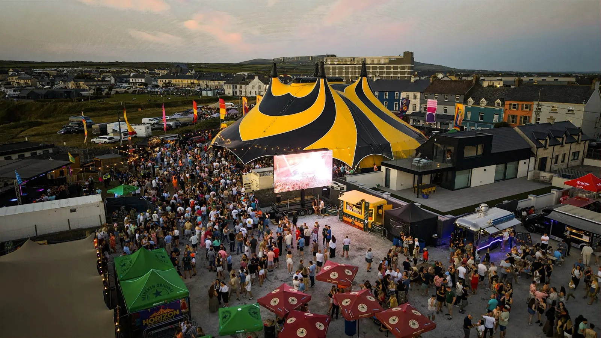
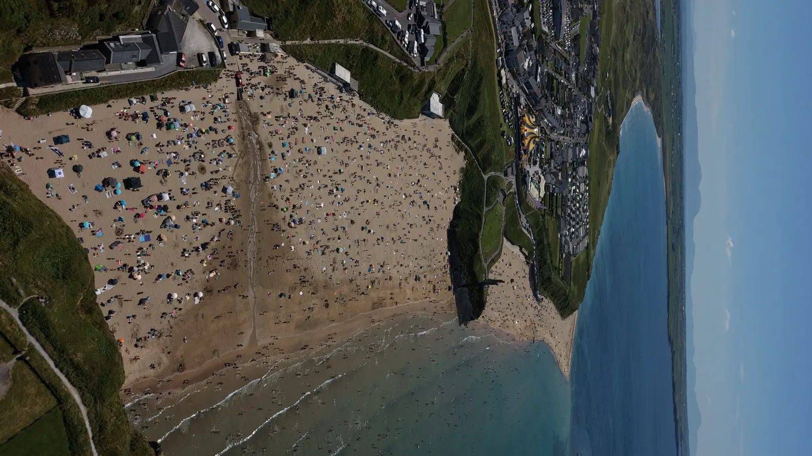

Browse
Choose a festival day and media type, then open any moment in a focused viewer.

Ballybunion · 10–12 July 2026 · Official media archive
The official photographs and films from Horizon Festival 2026, prepared for fast viewing and high-quality personal downloads.
Official archive
Every file is resized for the web, stripped of unnecessary metadata and available in a practical download format.
0 of 0 moments
Loading the archive…

Horizon Festival 2026
Horizon Festival brought three days of live music and summer energy to Ballybunion, overlooking the Atlantic and the ruins of Ballybunion Castle.
The 2026 programme featured The Highstool Prophets, The Rising, Super Céilí, Jenny Greene, The Circus Ponies, Electrad, Bingo Loco, DJ Marty Guilfoyle and RiffShop.
Visit the official festival websiteMade to be shared
Choose a festival day and media type, then open any moment in a focused viewer.
Save an optimized high-resolution copy without carrying the weight of the camera original.
Choose Instagram, TikTok, Facebook or your device share sheet from every photograph and film.
Backstage partners
This is an approved layout example. Partner names and logos will be replaced with the confirmed Horizon 2026 line-up before this section is treated as official.
Good to know
Yes. Open a photograph and choose “Download high-resolution JPEG”. The gallery copy is optimized to balance quality and file size.
Personal and non-commercial social sharing is welcome. Credit Horizon Festival when practical and read the photo usage terms.
Send the image title or a screenshot through the official contact form. Requests are reviewed by the festival team.